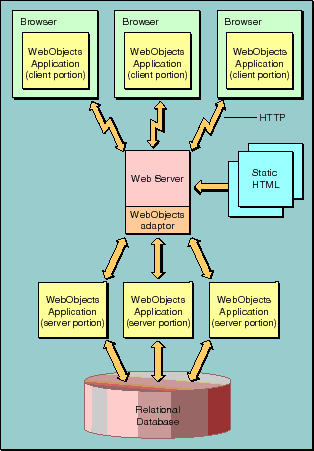

Table of Contents
Table of Contents  Next Section
Table of Contents
Next Section
Table of Contents  Previous Section
Previous Section

Figure 3. A Web Site Running Java Client Applications
Figure 3 illustrates a Java Client application. As before, the browser can still communicate with your application using HTTP and HTML. In addition, Java Client passes objects between a portion of your application (written in Java) residing within the browser and the portion of your application that remains on the application server. Your WebObjects applications can therefore be a mix of Java Client and HTML-based pages.
Table of Contents Next Section